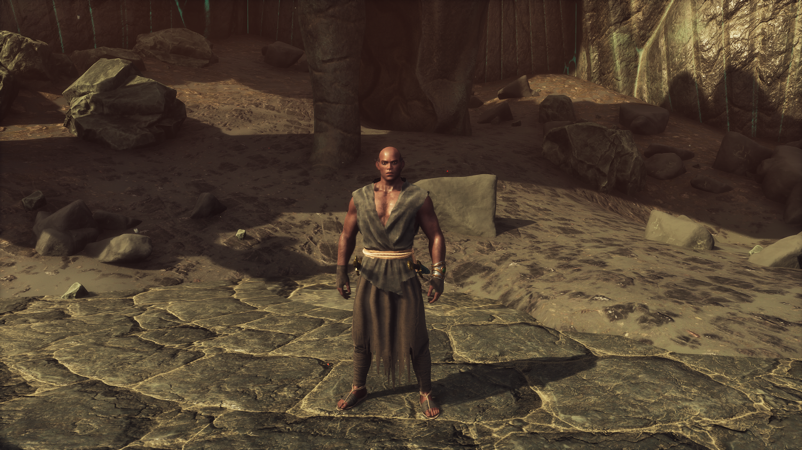

The volcano has many unique terrain features, some serving as a harm to the player,
while others serve to provide resources or purely decorative purposes.
These include:
Dead fossilized trees.
Rivers of active lava flowing.
Ruins of the Serpent-men of Valusia,Now inhabited by the Votaries of Skelos.
Obsidian veins containing valuable resources like raw ash.
The obelisk area, a raised platform over the lava with a teleportation
obelisk on it.

Vathis The Hierophant - Screenshot By Kyle F.
The Votaries of Skelos
The Votaries of Skelos are a faction in the game Conan Exiles. They consist of humans of various races who have made their way to the volcano.
Upon hearing the whispers of the Serpent-men from the Well of Skelos, they formed a cult worshipping it. They dress in simple clothings made
with the ash of the volcano sewn in and wield weapons crafted from the obsidian veins dotting the area. When defeated, weapons in the style
of the Serpent-men can be looted from them.
An endgame dungeon located at the center of the volcano. Story-wise, it serves as what would be the final dungeon the player completes before
beating the game. A place of myth and legend, the last few remnants of the Serpent-men of Valusia dwell inside, slowly dying out as a result
of a limited gene pool even thought the volcano provides the proper environment for their eggs to hatch. They desperately attempted to
preserve their species by interbreeding with various other reptiles. Such as cobras and crocodiles, that being why they can also be found in
the well. Their failures have made them bitter, and they have become determined to take every other sentient species with them in their
extinction. Humans most of all, as they blame them for their downfall.
The volcano is home to several powerful bosses that players has the option to face. From ancient evils to mythological creatures, their as is quite the variety.
Including:
Emissary of Atla-Nacha - A giant spider that can appear rarely where Skelos cultists normally spawn.
The Degenerate - The last pureblood Serpent-man and final boss the Well of Skelos dungeon.
Apep Chaosforged - A Serpent-man who guards the volcanic forge within the well of skelos.
I have many aspects I enjoy about the volcano within the game. I but I have a few specific things that stand out. Such as the obelisk for its usefulness.
My Top 3 Favorite Aspects:
The Lava Rivers
The Serpent-men
The Obelisk Area
Even though I have these parts that I favor, I overall greatly admire the whole volcano in-game.
The volcano actually has some pretty interesting cut content. The most notable of which is giant lava worms that seem to be similar to a boss from the game.
The worm still exists within the game's files and can spawned through the admin panel.